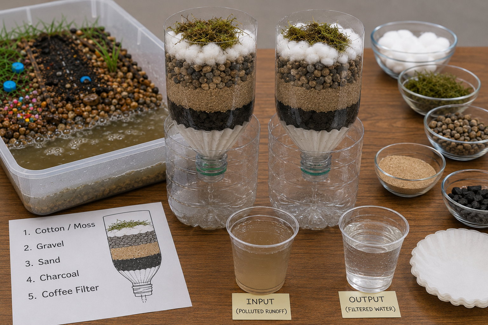
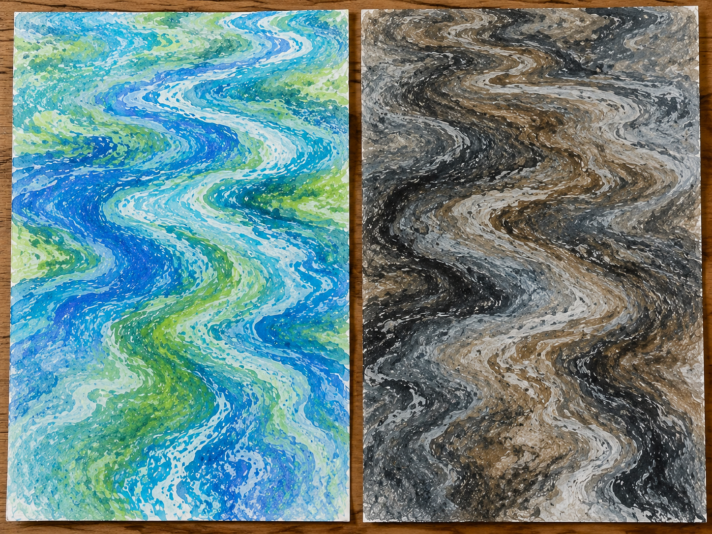

Set the tone for the walk and introduce the topic before beginning the walk. This should take between 5–10 minutes — nothing longer than the attention spans of the kids.
Opening Duaa
Start with a duaa for protection from harm and evil. The duaa can be led by either the walk leader or a child who has the duaa memorized.
“Say, ‘Just think: if all your water were to sink deep into the earth, who could give you flowing water in its place?’”
Surah Al-Mulk 67:30
Throughout this rhythm, we have seen how all sorts of different creatures rely on water, how those lifeforms are interconnected, as well as the impact water has on the earth itself. The blessings found in water are countless! This ayah reminds us of a vital point: that our continued access to water is only possible with the permission of Allah, and that it is a blessing that can be rescinded at any point, if Allah willed it. In order to show our gratitude for this blessing, we must abide by the laws Allah has put in place and act as good Khulafaa (stewards). In this lesson, we will dive into the dos and don’ts of stewardship, and how we can fulfill our role as Khulafaa Al-Ardh!
This is information to share with the kids. What you share and the level of detail will depend on the ages of the kids in your pod. Use your discretion.
Over the last seven weeks, we have traveled from the muddy banks to the deep water, meeting the birds, bugs, reptiles, and plants that make up our local wetlands. But today, we are looking at the most powerful creature in the entire ecosystem: Us. Humans have a massive impact on the water, and this week is all about learning how to use our hands to protect it!
The Divine Design: The Flowing River
In Islam, humans are given a very special job title: Khalifah (Steward or Caretaker of the Earth). Allah gave us the Amanah (trust) to use the earth’s resources, but we are strictly forbidden from destroying them.
The Prophet (PBUH) taught us not to waste a single drop of water, no matter how much we have in front of us. Conservation is an act of worship.
What is a Watershed?
A watershed is exactly what it sounds like: a giant “shed” or bowl of land that catches all the rain.
The Giant Bowl: When it rains in North Texas, the water doesn’t just stay where it falls. Because the land is sloped, the rain flows downhill. It runs off our roofs, down our driveways, into the street gutters, into the small creeks, and eventually into a massive river or lake.
The Runoff Rule: Here is the most important rule of the watershed: The water carries whatever it touches. If rainwater flows over a forest, it picks up dead leaves and dirt (natural). But if it flows over a parking lot or a fertilized lawn, it picks up oil, trash, and chemicals (pollution), carrying it straight into the homes of our local turtles and herons.
The Journey to Your Tap
Before water reaches our sinks, it goes on a massive, highly engineered journey. As Khulafa (stewards), we should know exactly where our resources come from!
The Source: The water in your city doesn’t magically appear in the pipes; it comes straight out of the local Trinity River basin lakes, like Grapevine Lake, Lake Lewisville, or Lake Lavon.
The Transport: Giant, high-pressure underground pipes pump the raw lake water for miles to a massive Water Treatment Plant. After it is cleaned, it is pumped up into those giant water towers you see around town. Gravity pulls the water down from the tower, creating the water pressure that pushes it through the pipes and out of your faucet! When we protect the creek from pollution, we are actually protecting our own drinking water!
The Cleaning Process: Raw lake water isn’t safe to drink yet. At the treatment plant, engineers clean it in three main steps:
Clumping: They add safe chemicals that make the dirt and mud stick together into heavy clumps that sink to the bottom.
Filtering: The water is pushed through giant beds of sand and crushed coal (just like our Earth Filter activity!) to scrub out the tiny particles.
Disinfection: They add a tiny bit of chlorine or ozone to kill the invisible germs.
The Contaminants: What exactly are they cleaning out? The plant has to remove natural things like dirt, algae, and bacteria (from animal waste), but it also has to work hard to remove human pollution, like the chemical fertilizers we learned about last week, oil from the roads, and even microplastics.
Stewardship at Home: Catch the Rain and Plant the Natives!
We know that all the water flows downhill, but what happens when that water hits our driveways, sidewalks, and streets?
The Concrete Problem: Soft earth acts like a giant sponge, soaking up rain slowly. But concrete and cement are completely solid. When heavy Texas rain hits a paved street or a roof, it cannot soak in. Instead, it rushes incredibly fast into our storm drains and blasts into the local creeks. This rushing water causes erosion, literally washing away the muddy banks and destroying the homes of our frogs and turtles!
The Rain Barrel Solution: How do we slow the water down? We catch it! By hooking up a rain barrel to the gutters on our houses, we act like a giant “pause button” for the storm. The barrel catches the fast water before it hits the concrete. Even better, during our blistering, dry Texas summers, we can use that free, caught rainwater to irrigate our gardens instead of wasting the city’s perfectly clean drinking water!
The Native Plant Power-Up: As Khulafa (stewards), we can make a brilliant swap! If we replace some of our lawn grass with native Texas pollinator plants, we win twice. Allah designed native plants to survive harsh Texas droughts, meaning they naturally need very little water to thrive. Plus, their beautiful blooms provide an all-you-can-eat buffet for our local butterflies, native bees, and birds!
The “Invisible” Water on Your Plate
Did you know you “eat” water every day? A single apple takes 18 gallons of water to grow before it gets to the grocery store. A single hamburger takes over 600 gallons of water to produce (from watering the grass the cow eats to processing the meat)!
As we end this rhythm, take a moment to reflect on the incredible journey we’ve shared. Over the last eight weeks, we have transformed from curious observers into knowledgeable Khulafa of our local wetlands. We have dug our hands into the mud, traced the food web from microscopic algae to the giant Great Blue Heron, and witnessed the perfect, divine balance (Mizan) Allah has woven into every drop of our creeks and lakes.
Earning your title as a Khalifa is all about carrying the Amanah (trust) to protect and cherish these waters every single day. This rhythm may be over, but your job as a steward of the earth is just beginning. Whether you are hiking the sunny trails of the Elm Fork, grabbing a trash bag and spending an hour picking up plastic from the shoreline of a local creek, planting native flowers in your garden, or simply remembering to turn off the tap at home, the future of the water is now in your hands. True leadership means leaving a place better than we found it. Keep exploring, keep protecting, and always keep looking for Allah’s beautiful signs in the wild! When we work together to clean up a habitat, we are answering the Prophet’s call to show mercy (Rahmah) to the earth!
Now that we are all up to speed on this week’s topic, let’s start walking! The following are some conversations and activities to do as you walk. This should take about 30–60 minutes — again, nothing longer than the stamina of the kids.
The Most Beautiful of Names
Introduce the name of Allah and its basic meaning as you start your walk. Encourage the kids to reflect on the name throughout the walk, as well as mentioning it whenever relevant.
الْوَاسِعُ
Al-Waasi‘
The All-Encompassing and Magnanimous
We have seen a few of the endless blessings that stem from water. Allah created all life from water, made all life reliant on it, and has made us interconnected and reliant on that which relies on water. These countless blessings are given to us by Al-Waasi‘, the All-Encompassing and Magnanimous. The blessings of Al-Waasi‘ stretch wide and far, and are not limited in the way we sometimes think it to be; it is not a zero-sum game. The gain of one does not necessitate the loss of another.
Here are some observation prompts to help the kids tune into their environment and engage all of their senses.
For Kids 1–4
Do you see any water flowing today that may end up in the water we have at home?
Is the water we see water we can drink? Is it clean? How does it get clean?
For Kids 5–8
Just like our parents take care of us and we take care of our home, what does it mean to take care of our environments?
Allah entrusted us with the earth and its treasures. How can we be good stewards of nature?
For Kids 9–12
Today, look around for all of the man-made additions to your natural environment. Which of the items belong in the recycling bins? Which ones are biodegradable? What makes an item degradable vs biodegradable vs compostable?
Is it good for the environment to throw banana peels into the woods? How about fruit seeds?
Phew, that was a good walk! Let’s pause and apply what we have learned and reflect on what we have observed.
Stories for Blooming Hearts
Share a story from our tradition that ties to this week’s topic. Note that creating an engaging storytelling experience is on the storyteller; these are just the basic details. A story told from the heart will reach hearts!
Musa AS and the Splitting of the Sea
When Musa AS came to know of his Prophethood, Allah SWT commanded him to go to Fir’awn, the Pharaoh, and address him about his disbelief.
When Musa AS went to fulfill Allah’s command and spoke with Fir’awn about his beliefs, Fir’awn accused Musa AS of being a sorcerer and trying to trick people when Musa AS publicly demonstrated a miracle from Allah — his staff turning into a snake!
Fir’awn challenged Musa AS by bringing all of the best sorcerers of Egypt at their time. Musa AS’s miracle of Allah, his staff turning into a huge live snake, devoured all of the magicians’ tricks.
Many people fell into sujood believing in Musa AS and that he was a true Prophet of Allah.
Fir’awn now sought Musa AS out as an enemy. He did not want Musa’s people, Bani Isra’il, to escape because he wanted them to be there for labor.
Finally, Allah commanded Musa AS to take Bani Isra’il and escape at night.
They did just that and ran as far as they could to escape the oppression under which they were living.
When Fir’awn found out Bani Isra’il were escaping, he followed them with his army.
Fir’awn’s army was just about to catch up when Musa AS and Bani Isra’il reached the sea.
Bani Isra’il started to panic as there didn’t seem to be any escape. They said, “Certainly, we will be caught!” Musa reassured them, “Absolutely not! My Lord is certainly with me — He will guide me.” Then Allah SWT inspired Musa: “Strike the sea with your staff,” and the sea was split, each part rising like a huge mountain! (Surat Shu’araa, Ayah 61–62)
Bani Isra’il was able to escape through the path made in the water. When Fir’awn and his army tried to follow, the water crashed in on them, drowning them while the believers were safe at last.
Suggested Resource: Tafsir of Surat Shu’araa, Ayah 52–68
Takeaways
This is a beautiful story of the power and confidence of trusting in Allah. Don’t forget to recall this story on ‘Ashura’ coming up on the 10th of Muharram, because that was the day Musa AS and his people were saved!
This story gives us hope that Allah will eventually give relief to all oppressed people. May Allah free all of our oppressed brothers and sisters around the world, make us of those who stand up for them, and never amongst the oppressors. Ameen!
This week we are learning about the impact of humans’ use of water. In this story, Musa AS used a miracle Allah gave him to move water and save people. How can we benefit others through water as well?
Fill the large bucket with water and place it in the center. Tell the kids: “This is our rain cloud — it’s full of water that Allah sent down from the sky.”
Give each child a sponge and a small cup. The cup is their rain barrel — it collects the water before it runs away into the ground.
Kids dip their sponge into the bucket, then squeeze it out into their cup.
Count squeezes together out loud as they fill their cup. How many did it take?
Once their cup is full, celebrate: “Your barrel is full — that’s water saved!”
Discussion
Where does rain go when it falls on the ground?
It soaks into the soil, flows into streams, or runs off into drains — and a lot of it is lost. A rain barrel catches it before it gets away.
Why would someone want to save rainwater in a barrel?
To water plants, wash things, or save it for when it doesn’t rain for a long time.
Allah sends rain as a gift. What’s one way we can take care of that gift?
Collect it, don’t waste it, use it wisely.
Note: Alternate activity for this age in the Addendum: Can We Clean This Water?
Plastic container or baking tray (with at least 2–3 inch sides)
Gravel or pebbles
Water
Spray bottle
Pollutant options — choose one or combine:
Color tablets (easiest, clean, vivid)
Food coloring drops labeled by type (e.g., green = fertilizer, red = chemical waste)
Cooking oil (a few drops — represents fuel/motor oil runoff)
Sprinkles (good substitute for color tablets, represent different pollutant types)
Materials to collect from nature
Small rocks or sticks to shape terrain
Activity — Part 1: Build the Landscape
Fill the bottom of your container with gravel (or pebbles).
Create a hill with the gravel so that the bottom of one side of the container is empty, and the gravel slants upward to the other side.
Pour water into the empty side of the container.
Activity — Part 2: Pollute the Ground
Place your pollutants at the top of the hill before it rains:
Drop color tablets or food coloring on the “field” side (fertilizer, pesticides)
Drizzle a few drops of oil on the “road” side (car runoff)
Add sprinkles anywhere to represent litter or chemical residue
Ask: “What do you think will happen when it rains?” Let kids make predictions.
Activity — Part 3: Make It Rain
Use the spray bottle to rain down on the landscape.
Watch what happens — what moves? Where does it go? What does the river look like now?
Discussion
What happened to the pollutants when it rained? Did they stay where they were?
They moved — water carried them downhill and into the river.
What could your color tablets or food coloring represent in real life?
Fertilizers from lawns, pesticides from farms, chemicals from factories, or soaps from car washing.
What kind of pollution is this called?
Surface runoff — pollution that gets washed off the land and into waterways by rain. It doesn’t come from one pipe or one source, it comes from everywhere at once.
This is exactly what happens to the Trinity River after a heavy rain in DFW. What do you think that means for the fish and plants living in it?
The water becomes harder to live in — less oxygen, more chemicals, cloudier and harder for light to reach underwater plants.
Is there anything we can do to slow it down or stop it?
Plant more grass and trees to absorb runoff, avoid using too many chemicals on lawns, pick up litter before rain washes it away.
How does polluted water affect us?
When waters are polluted, it leads to less healthy fish, fish with toxins that end up in our bodies when we eat them, decreased biodiversity, and predators that get sick from eating sick prey — unable to keep pest populations under control.
For Kids 9–12: Pollution Lab + Filtration Challenge

Materials to bring from home
All materials from the 5–8 Pollution Lab (see above)
2 large plastic bottles per child or pair, cut in half
Coffee filters or cotton balls
Activated charcoal (optional but powerful — available at pet stores)
Fine sand
Gravel or small pebbles
Rubber bands or tape to secure layers
Aquarium water test strips (pH, nitrates, hardness) — or bring a clear glass for visual clarity comparison
Materials to collect from nature
Moss or dried grass (natural pre-filter layer)
Sand from a creek or trail edge
Activity — Part 1: Run the Pollution Lab
Follow the same steps as the 5–8 experiment — build the landscape, pollute it, make it rain, collect the runoff in your river container. This is your input water for the filtration challenge.
Activity — Part 2: Design Your Filter
Before building, give kids 2–3 minutes to plan on paper: what layers will you use, and in what order? Why?
The challenge: using only the provided materials, build a multi-stage filter inside your cut bottle that gets the runoff water as clean as possible.
A suggested starting point (they can modify): cotton or moss → gravel → sand → charcoal → coffee filter at the bottom.
Pour the polluted runoff water slowly through the top and collect the output in the bottom half of the bottle.
Activity — Part 3: Test and Compare
Hold the output next to a cup of plain tap water. How close does it look?
If using test strips, dip into both samples and compare readings side by side.
Discuss: what did the filter remove? What did it not remove?
Discussion
What did your filter visibly remove? What did it miss?
Sediment and some color likely cleared up — but oil and dissolved chemicals are much harder to remove with simple materials.
Why does the order of your filter layers matter?
Larger particles need to be caught first or they clog the finer layers. It’s a sequence — just like how DFW water treatment plants use multiple stages, not just one.
Your filter made the water look cleaner. Does that mean it’s safe to drink?
Not necessarily. Clarity doesn’t equal safety — pathogens, dissolved chemicals, and heavy metals don’t always change the color or smell of water.
What does a real municipal water treatment plant do that your filter can’t?
Chemical treatment (chlorination), UV sterilization, pressure filtration, and constant monitoring.
If a community didn’t have access to a treatment plant — after a flood, or in a remote area — what would they need to know to make water safer?
Boiling kills pathogens, filtration removes sediment, and some chemicals (like iodine tablets) can treat biological contamination. But no single method does everything.
After completing the activity is a good time to stop for a snack. Power their brains and bodies with something nutritious! Bonus points for avoiding single-use plastics and being good Khulafa. Be sure to leave the area as you found it, or better, following the good manners taught to us by our Prophet ﷺ.
Now that this week’s walk is just about done, let’s wrap it up.
Tadabbur Among the Trees
Here are some prompts to help wrap up the walk. These prompts can be used to spark a conversation or to fill up your nature journal for today!
For Kids 1–4
What did we use water for on our walk today? Did everyone bring drinking water? Wash their snacks? Let’s thank Allah for this blessing He made readily available for us.
What are things we can do to protect water on this earth?
For Kids 5–8
What are some changes you can make in your life to reduce water waste?
How does pollution affect wildlife? Draw two scenes: one of animals in clean water, and another of animals in polluted water.
For Kids 9–12
Narrate a story about a tree being chopped down… how does it make you feel? How do the surroundings look without it?
Make a list of all the trash you collected today. How much of it was degradable or non-degradable? Which items can you send to the recycling center?
Need more nature? We got you! Here are some additional resources to further enrich your understanding and reflection. These additional resources can be utilized by the pod, by individual families, or a combination of both — whatever best fits your needs!
Prophetic Wisdom
Find an opportunity to share the wisdom of our Prophet ﷺ as you walk.
“It was narrated from ‘Abdullah bin ‘Amr that: The Messenger of Allah passed by Sa‘d when he was performing ablution, and he said: ‘What is this extravagance?’ He said: ‘Can there be any extravagance in ablution?’ He said: ‘Yes, even if you are on the bank of a flowing river.’”
Sunan Ibn Majah 425
In this hadith, Rasulullah SAWS reminds us to be mindful not to waste water even if we have access to an abundance of it. This is especially relevant in our times when we turn on the water faucets and forget ourselves. Some ways to use less water when making wudu are to be mindful and pay attention when making wudu, turn the faucet on a lower setting to make a smaller stream of water, or use a container filled with water and pour it out instead of using running water. Our ibada is not only to make wudu but to do it in the best way, and the least wasteful way possible.
“If you tried to count Allah’s blessings, you would never be able to number them. Surely Allah is All-Forgiving, Most Merciful.”
We have spent eight weeks learning about water and we have witnessed the various blessings it brings, and we have not been able to scratch the surface! Truly, the blessings that stem from a single blessing are countless!
“Every soul is certain to taste death: We test you all through the bad and the good, and to Us you will all return.”
Allah tests us through blessings and through trials. A person living with modern amenities and continual access to clean water on demand is being tested just as a person living in a developing country without easy access to water is being tested. They are different trials, but trials nonetheless.
The Night Journey (17:27)إِنَّ ٱلْمُبَذِّرِينَ كَانُوٓا۟ إِخْوَٰنَ ٱلشَّيَٰطِينِ ۖ وَكَانَ ٱلشَّيْطَٰنُ لِرَبِّهِۦ كَفُورًا ٢٧
“Those who squander are the brothers of Satan, and Satan is most ungrateful to his Lord.”
Wastefulness is a sign of ingratitude, and ingratitude is a quality of Shaytan. The only time the Quran uses the term “the brothers of Shaytan” is in this ayah, in the context of wastefulness! None of us wants that description ascribed to them, so we must be very careful not to be wasteful and to show gratitude for all of our blessings.
A flow of movements to get kids’ energy out at the beginning, or help them calm down at the end of the walk.
1
Today, we will slow our bodies to think and move like water. Stand tall with feet hip-width apart. Breathe in deeply and slowly raise both arms up like water droplets evaporating into the sky. Reach your fingertips as high as they can go, becoming clouds!
2
Sway side to side with soft knees, letting your arms ripple out like rolling ocean waves. What sounds does the ocean make? Can we hum like a wave together? Breathe in and hum out loud like an ocean!
3
Still yourself and stand in Mountain Pose — feet together, arms at sides, spine tall. Imagine you’re a mighty glacier, holding millions of gallons of frozen fresh water for the rivers below.
4
Now lunge forward, one knee bent, arms stretched long in opposite directions like a watershed spreading water across the land. A watershed is all the water that drains into one river. Now switch legs and stretch arms again! Take slow deep breaths.
5
Take a seat on the ground and kneel and fold forward, arms stretched out or resting by your sides. All the water has seeped into the ground. You’re a shell resting peacefully on the ocean floor, held gently by the water all around you. Breathe slowly… in for 4 counts, out for 6. Feel the ground holding you, steady your breath and sit back into a seated position.
7 small identical plastic pots (yogurt cups, small drinking cups, or film canisters)
Waterproof tape
Scissors
A watering can filled with water
Permanent marker
Stopwatch
Optional materials for older kids (9–12)
A small length of string (~12 inches)
A few paper clips or a coin taped to string (the “load”)
Activity
Using the tip of the scissors, poke a hole through the center of both plates, just wide enough for the dowel to slide through.
Slide the dowel through both plates, leaving enough space between them for the cups to fit. Plates should face back to back.
Tape the cups evenly around the rim between the two plates, all facing the same direction.
Rest the dowel across the edges of the tray and secure with tape so the wheel hangs freely and can spin.
Slowly pour water from the watering can into one cup. As it fills and falls, the wheel spins, bringing the next cup under the stream.
Additional steps for older kids (9–12)
Mark one cup with a permanent marker. Use a stopwatch to time one full revolution. Calculate revolutions per minute (rpm).
Try holding the watering can at different heights. Does the wheel spin faster when water falls from higher up? Record results.
Tie a string to the center of the dowel and hang a paper clip or coin from it. Pour water and watch the wheel wind the string and lift the weight — it’s now doing measurable work.
The weight and movement of water pushing into the cups; the water transfers its energy into the wheel.
Did it spin faster when you poured from higher up?
Yes, the higher the water falls, the more kinetic energy it builds up before hitting the wheel.
Before electricity, what did people use water wheels for?
Grinding grain into flour, sawing wood, pumping water, running looms — moving water was the original power source.
What is kinetic energy?
The energy something has because it is moving. Falling water has kinetic energy. The spinning wheel has kinetic energy. Water wheels convert one into the other.
For older kids: What is the difference between the wheel just spinning and the wheel lifting a weight?
Spinning alone is motion; lifting a weight is work. Energy is transferring from the water, through the wheel, into the load.
If you connected this wheel to a generator, what would happen?
The mechanical energy of the spinning wheel would be converted into electrical energy. This is the same principle behind every hydroelectric dam on earth.
The Hoover Dam uses this same principle on a massive scale. What are some differences between what we built and a real dam?
Instead of cups on a dowel, it uses precision-engineered turbines. Instead of lifting a paper clip, it drives generators powering entire cities. But the core idea — falling water turning a wheel that does work — is identical.
Is your water wheel 100% efficient? Where is energy being lost?
No, energy is lost to friction at the axle, water splashing off instead of turning the wheel, and vibration. Real turbines are engineered to minimize every one of these losses.
Let your heart guide you to create a beautiful work of nature art. Use Allah’s divine creations as inspiration!
Oil Sheen Marbling
Water carries color the way it carries pollution — spreading, swirling, impossible to fully take back. Today we use that to make something beautiful.

Materials to bring from home
Soft pastels or chalk (both work; soft pastels give richer color)
A shallow tray or bin filled with water
White cardstock or watercolor paper, cut to fit the tray
Scissors (for scraping the pastels)
Paper towels for drying
Activity — Part 1: Make the Sheen
Fill the tray with water and let it settle until still.
Using the edge of the scissors, scrape soft pastels or chalk over the water surface — the dust will float and spread, swirling like an oil sheen on a river. Use blues and greens first.
Pause here before printing. Look at the surface together: “This is what runoff looks like from above — color and chemicals that don’t sink, just spread across the top. A fish swimming under this can’t breathe properly.”
Swirl gently with a finger or stick to create movement in the pigment.
Activity — Part 2: Pull the Print
Fold a piece of cardstock into a slight U shape and lower it gently onto the water surface. Let it sit for about one minute.
Starting from one end, slowly peel the paper up from the tray and set it aside to dry.
This is your “river” print — the marbled surface captured on paper.
Activity — Part 3: The Polluted River (optional second print)
Scrape darker colors into the same water — grays, browns, black. Watch how they cloud and overwhelm the blues and greens still floating there.
Pull a second print the same way. Set it next to the first.
The two prints side by side tell the whole story — clean water and polluted water, both made from the same tray, the same surface, the same river.